IRAF (DEPRECATED)#
Important
You will need the tutorial data for HR30 to proceed this example. You can download it from here: 
This short lecture note is used as a material for the “legacy session” which uses IRAF. For basic concepts and ideas (e.g., reason for flat division, etc), please refer to the other lecture note sections.
This time, you will learn very basic tasks of IRAF. This includes
Print information of images (
IMSTAT,CCDLIST,IMHEADER,HSELECT)Arithmetics on images: copying an image and adding, subtracting, multiplying, and dividing an image with others (
IMCOPY,IMARITH)Combining: make master bias, dark, and flat (
IMCOMBINE)Preprocessing
Then
Primitive photometry (
IMEXAM,DAOEDIT)Aperture photometry (
PHOT)Spectroscopic data reduction (
APALL,IDENTIFY,REIDENTIFY,FITCOORDS,SENSFUNC,FLUXCALIB)
I will explain the usage of IRAF/PyRAF in conda environment, so it may slightly differ from normal IRAF, but basically the same.
[TOC]
Data files
There are two sets of data: for photometry (P/2006 HR30 data from SMOKA) and spectroscopy (Vega data from SNU AO2 class of 2016). The contents are
HR30 (Used until section 9):
KCD095628.fits KCD095629.fits KCD095630.fits KCD095631.fits bias: KCD095601.fits KCD095603.fits KCD095605.fits KCD095607.fits KCD095609.fits KCD095626.fits KCD095602.fits KCD095604.fits KCD095606.fits KCD095608.fits KCD095610.fits KCD095627.fits flat: KCD095734.fits KCD095736.fits KCD095738.fits KCD095740.fits KCD095742.fits KCD095735.fits KCD095737.fits KCD095739.fits KCD095741.fits KCD095743.fitsVega (Used from section 10):
vega_7s.fits bias: bias-1.fits bias-2.fits bias-3.fits dark: dark-001_7.fits dark-002_7.fits flat: flat_30-001.fits flat_30-002.fits flat_30-003.fits ref: ne_30.fits ne_60.fitsBecause of the size of images, I did not include them in this GitHub repo. If you want, please contact me via (dbstn95@gmail.com)! The HR30 data are actully publicly available via SMOKA and the Vega data are obtained in the class.
1. Run PyRAF#
You can start IRAF environment (not IRAF itself!) by typing
$ source activate iraf
on the terminal. iraf is the name of conda environment you set when creating the environment, and you may have used iraf27, etc. Then you are now in the IRAF environment run on Python 2.7. At a suitable directory, type
$ mkiraf
and answer the question with xgterm. Typing ls will show you login.cl and uparms directory. login.cl is the file which saves basic properties: It’s a settings file in short. It will be used when you run IRAF in this directory only. You have to run the IRAF in the directory where you have login.cl. uparms is a directory which will save the changes you make to the default settings of IRAF.
Now, you can run IRAF by typing $ cl
or run PyRAF by typing
$ pyraf
I recommend to use PyRAF, since AstroConda does not fully guarantee the stability of IRAF CL. The IMEXAM, for example, does not correctly work if you use cl. You will see the following on terminal with the prompt “-->”:
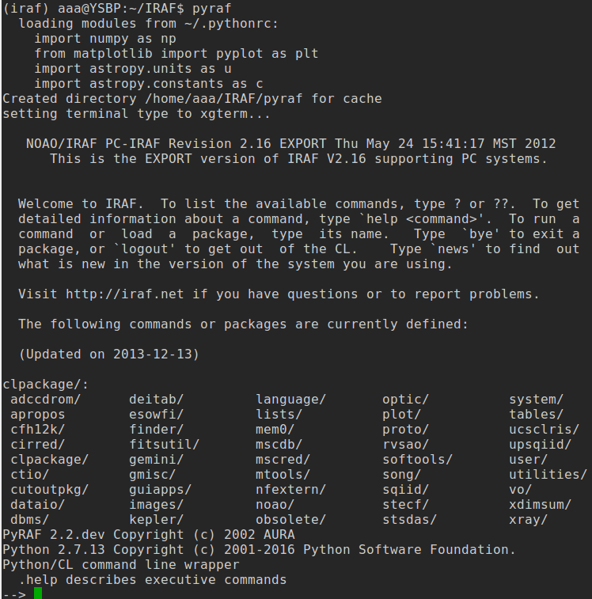
NOTE:
Change all the names to “.fits”, NOT “.fit”
All the images should have header
BZEROandBSCALE. If they don’t, type the following on the cl terminal:--> noao --> imred --> ccdred --> ccdhedit *.fits BZERO 32768 --> ccdhedit *.fits BSCALE 1
This might be necessary for images obtained from some personal ccds. The real pixel value should be
real_value = pixel * BSCALE + BZERO. People sacrificed the 15th bit of 16-bit system, and used it as a “sign” bit. Usually,BZERO = 2**15 = 32768, andBSCALE=1.0. If you do not add these header keywords to the image header, you will result in many negative values from bias/dark/flat raw images, which eventually lead you to a wrong result. For more information, please see the astropy documentation.
2. Display Image#
PyRAF supports few LINUX commands, such as ls or cd without an exclamation mark (!). But to display image, you must use !ds9 or !ginga. You should also use (!) when delete files using rm.
Since IRAF is extremely comfortable when used with SAO ds9, I will use ds9 throughout this note.
SAO DS9#
Display the image:
TIP: It’s better to append the ampersand (
&) at the end ofds9. Try without it and see what happens.TIP: Always try to use
tabkey on your keyboard to “autocomplete”!
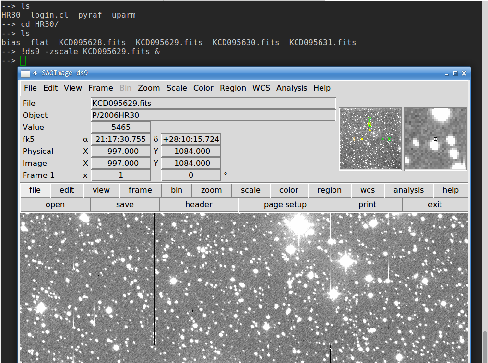
In the HR30/ directory, you have four images and bias/ and flat/ directories. The four images are the real images. I first will make master bias and flat.
IRAF IMPLOT#
There are many plotting packages in IRAF too, e.g., IMPLOT, for image display, and SPLOT, for spectrum display:
--> implot vega_7s.fits
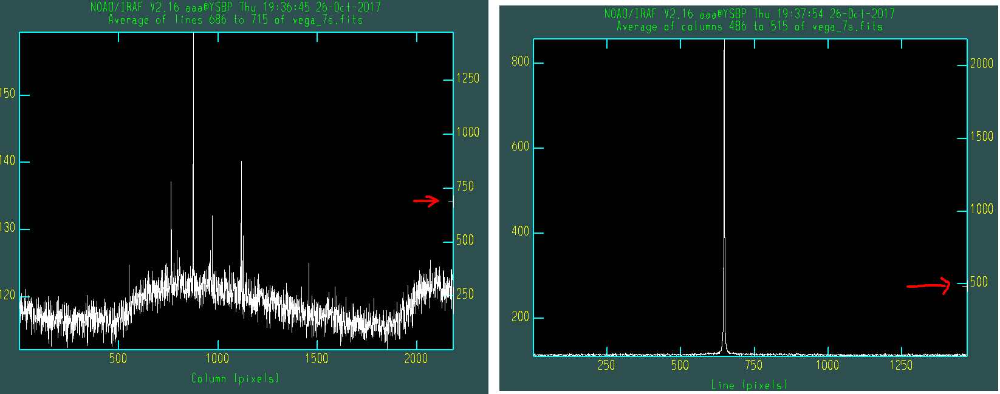
Click on the Graphics window, and hit : key, then you will see small box at the bottom of the window. The left image is obtained by typing :a 30 and then :l 700 (average over 30 pixels around line (row) 700), and the right image is obtained by :a 30 and then :c 500. On the images, there will be a small T-shaped tick on the right y-axis (red arrows). This indicates which line/column you are looking at.
3. Bias Combine#
First, make the list of bias files. Go to the bias directory by “--> cd bias” and type
--> ls *.fits > bias.list
This will make a file bias.list containing the list of all files that are bias.
QUESTION: Try what happens when you do
ls bias* > bias.list(delete.fits). Open thebias.listfile, and you will find something happened. Why?
Then
--> epar imcombine
epar means “edit parameters. The task IMCOMBINE will do task of combining images using many options.
We will combine all 12 images in the bias/ directory, and make one output named bias.fits using so-called median combine, while all other options left as default:
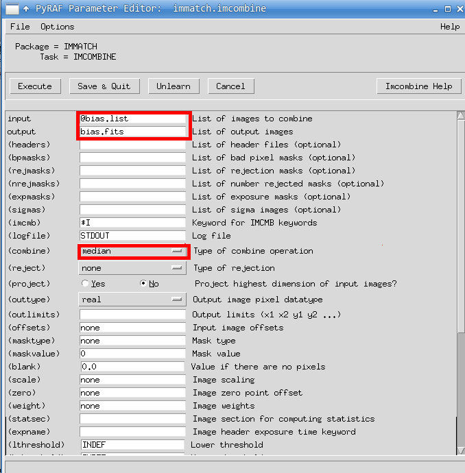
In IRAF commands, @filename means “open the file named filename, and put the contents here”. Since bias.list contains the list of file names of bias images,
@bias.list == KCD095601.fits, KCD095602.fits, ....... , KCD095627.fits
See how efficient it is?
Clicking Execute, you will see that a new file appeared. Check it by
--> !ds9 -zscale bias.fits &
In this tutorial, we will neglect the dark, because it is extremely small compared to that of bias and almost constant over the image in modern CCDs. So regard this master bias as “bias+dark”. If you have dark frames and want to make master dark frame, you can just do the same procedure for the dark frame images with identical exposure times (e.g., make dark10s.list, dark100s.list, etc).
4. Flat Combine#
To make master flat, you have to subtract master bias from combined flat image. All are identical as that of bias, but subtract master bias from the final combined flat.
--> cd ../flat/
--> ls *.fits > flat.list
--> epar imcombine
I want to make the combined image as flat0.fits first. Then save the result of subtracting bias, i.e., “flat0 - bias”, as flat.fits. Do the median combine first:
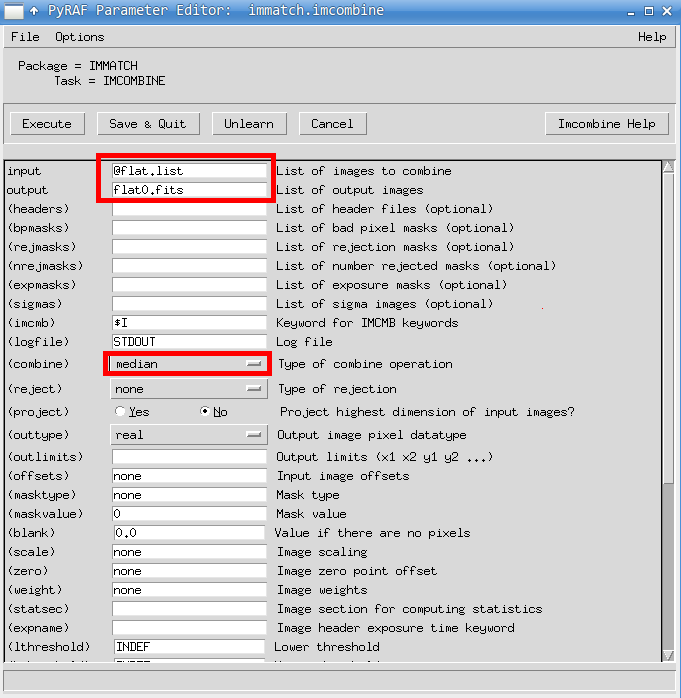
Now copy the master bias to here and subtract it from the combined flat:
--> cp ../bias/bias.fits .
--> imarith flat0.fits - bias.fits flat.fits
--> !ds9 -zscale flat.fits &
It’s very intuitive: “IMARITH image1 operator image2 output” means do the operation (operator can be +, -, *, /) to images (image1, image2) and save the result as “output”. IMARITH of course means image arithmetics. You can open the full options window as you did for IMCOMBINE by typing
--> epar imarith
5. Preprocessing#
IMUTIL Package#
Preprocessing is simply “(raw image - master bias)/(master flat)”.
--> cd ..
--> cp bias/bias.fits .
--> cp flat/flat.fits .
--> ls
bias bias.fits flat flat.fits KCD095628.fits KCD095629.fits KCD095630.fits KCD095631.fits
Conceptually what we have to do is first
--> imarith object_image - bias.fits output1
and then do
--> imarith output1 / flat.fits output2
Because we have 4 images, which is few, you can do this for each of image. However, there is cleverer way to do it.
--> ls KCD*.fits > obj.list
--> cp obj.list output1.list
--> cp obj.list output2.list
--> !perl -pi -e "s/KCD/b_KCD/g" output1.list
--> !perl -pi -e "s/KCD/bf_KCD/g" output2.list
--> imarith @obj.list - bias.fits @output1.list
--> imarith @output1.list / flat.fits @output2.list
--> ls
bf_KCD095628.fits bias b_KCD095630.fits KCD095628.fits obj.list
bf_KCD095629.fits bias.fits b_KCD095631.fits KCD095629.fits output1.list
bf_KCD095630.fits b_KCD095628.fits flat KCD095630.fits output2.list
bf_KCD095631.fits b_KCD095629.fits flat.fits KCD095631.fits
Here, perl -pi -e command is used for changing all the strings “KCD” to “b_KCD” or “bf_KCD”:
perl -pi -e "s/string1/string2/g" filename
^ ^ ^ ^
First s means we will change the strings, from “string1” to “string2”, within the file filename. I used b for bias corrected, and bf for bias and flat corrected. You can display all the images
--> !ds9 -zscale bf_*.fits -single &
TIP: Hit
tabkey and the next image will be displayed.TIP: When do the flat fielding, I did not normalized it to have average value = 1. See the next section’s Question.
Question: Hit
tabkey several times. Can you find something? What do you think it is?
CCDRED package#
There are some tasks which are made especially for bias, dark, and flat combine processes. They are called ZEROCOMBINE, DARKCOMBINE, and FLATCOMBINE, which are subtasks of CCDRED. They are all small variants of COMBINE (different from IMCOIMBINE), and run through CCDPROC task.
I usually avoid teaching these because it veils what’s happening in IRAF, and thus not very good for educational purpose. But I am showing you how to use these tasks, since it may be necessary for your future work. Manuals are kindly available from STScI: Just google with keywords such as “iraf zerocombine” and you will find the STScI website manuals like this.
ZEROCOMBINE#
For bias (zero) combine, use the following settings:
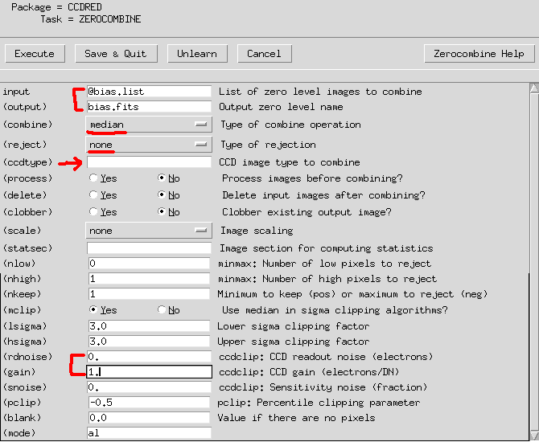
Many students fails to do it because they put something in
ccdtype. Let it be blank unless header information is correctly set!Don’t bother to much for
rdnoiseandgain, since they are used only forreject==ccdcliporreject==crreject. See the Zerocombine Manual.
DARKCOMBINE#
For dark combine, use the following settings:
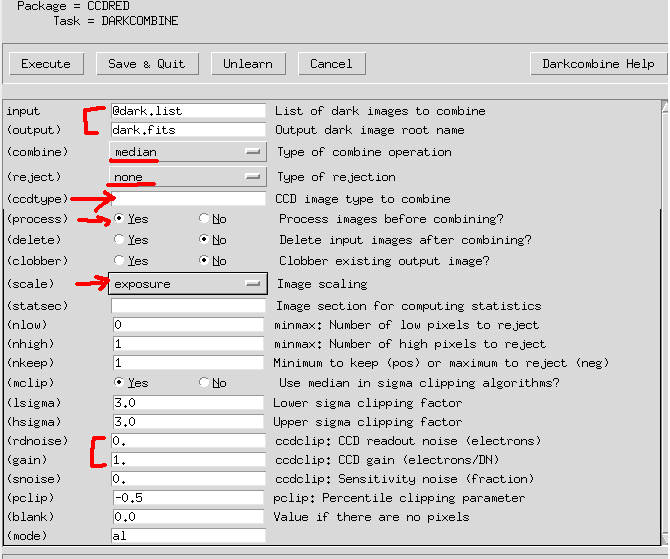
Please let
ccdtypeblank as before.Don’t bother to much for
rdnoiseandgain, since they are used only forreject==ccdcliporreject==crreject. See the Darkcombine Manual.processmeans it will do the bias subtraction (zerocorofCCDPROCtask).scalemeans it will scale the dark images to the exposure time, and combine all darks appropriately.The zero-corrected dark may have negative values and the mean is around 0.
If you do
DARKCOMBINE, the input dark files may be changed (automatically zero subtracted). If you type--> ccdlist, you can see [Z] to each dark files, which means the zero correction has already been done. This can be avoided by usingCCDPROC:--> epar ccdprocset:
input=@dark.list, (output)=dark.fits, (zerocor)=yes, (zero)=bias.fits.See below: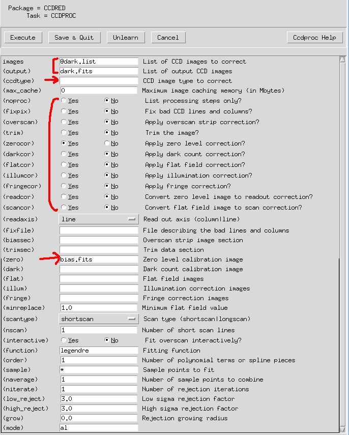
Or
COMBINEorIMCOMBINEto get the median-combined dark, and then subtractbias.fitsby IMARITH:–> combine dark*.fits tmp.fits combine=median –> imarith tmp.fits – Zero.fits Dark.fits
Of course
(IM)COMBINEandIMARITHall can be controlled by usingepar(epar combine, etc) as before. If you have better ways to do this, please let the TA know T__T
FLATCOMBINE#
For dark combine, use the following settings:
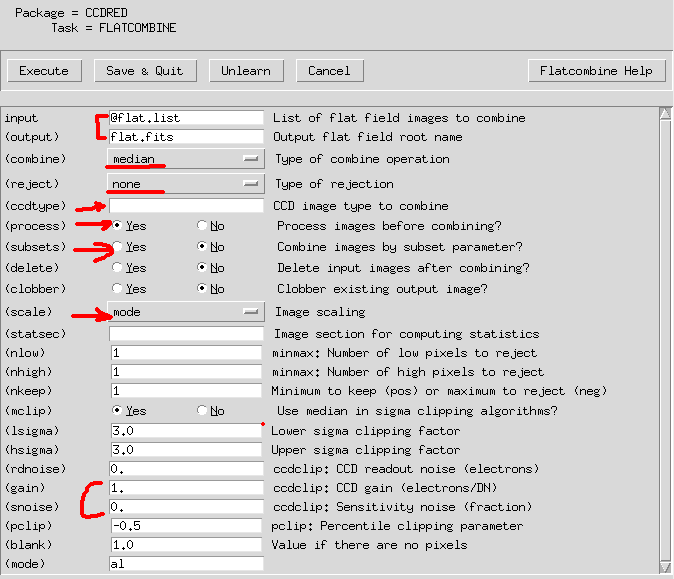
Please let
ccdtypeblank as before.Don’t bother to much for
rdnoiseandgain, since they are used only forreject==ccdcliporreject==crreject. See the Flatcombine Manual.Now we have to think about
subsetoption. Since flat should be differentiated by filters, slits (spectroscopy), etc, IRAF scans the headers and automatically subdivide the flats into several groups. Sometimes it does not work properly.scalemeans it will normalize the flat image by its mode, average, etc.
If you use
CCDPROC,input=@flat.list, (output)=flat.fits, (zerocor)=yes, (darkcor)=yes (zero)=bias.fits (dark)=dark.fitsis required.
6. File Information#
You may want to see the brief information, such as statistics or the so-called “header information”, of images. You can do this via many ways.
Statistics from IRAF#
There is a task named IMSTATISTICS which gives some statistics for each image:
--> imstatistics *.fits
# IMAGE NPIX MEAN STDDEV MIN MAX
KCD095628.fits 4194304 5590. 2655. 4098. 65354.
KCD095629.fits 4194304 5599. 2662. 4111. 65349.
KCD095630.fits 4194304 5582. 2643. 4116. 65361.
KCD095631.fits 4194304 5574. 2666. 4116. 65358.
b_KCD095628.fits 4194304 1395. 2307. -59. 61141.
b_KCD095629.fits 4194304 1403. 2315. -46. 61143.
b_KCD095630.fits 4194304 1386. 2293. -44.5 61145.
b_KCD095631.fits 4194304 1378. 2319. -43. 61141.
bf_KCD095628.fits 4194304 0.07362 0.1266 -3.118 3.335
bf_KCD095629.fits 4194304 0.07374 0.1271 -2.826 3.402
bf_KCD095630.fits 4194304 0.07279 0.1263 -3.6 3.402
bf_KCD095631.fits 4194304 0.0726 0.1273 -3.118 3.4
bias.fits 4194304 4196. 1345. 4141. 65275.
flat.fits 4194304 18973. 1960. 8.5 40058.
Question: Why do you think the results
bf_*.fitshave such low min/max values? Do you have better idea to cope with this issue? This becomes bothersome for IRAF sometimes: seeDAOEDITsection below.Question: From file explorer, you can see the sizes of each image. The original
KCD*.fitsimages are about 8.4 MB while the newly generated images are about twice larger. Why do you think this is so?TIP: If you do the flat fielding, etc, by using some tasks for several times, you may see the file size increases. If this happened, you are now not even be able to do basic arithmetics for the images (error message will contain something like
FXF~~~). This is because IRAF automatically makes a new “extention” on top of the original file, not overwriting it. You must delete the original file and do the reduction again.
Header from ds9#
On ds9, you can click on file -> header to see all the header contents.
Header from IRAF#
You can use IMHEADER:
--> imheader *.fits
KCD095628.fits[2048,2048][ushort]: P/2006HR30
KCD095629.fits[2048,2048][ushort]: P/2006HR30
KCD095630.fits[2048,2048][ushort]: P/2006HR30
KCD095631.fits[2048,2048][ushort]: P/2006HR30
b_KCD095628.fits[2048,2048][real]: P/2006HR30
b_KCD095629.fits[2048,2048][real]: P/2006HR30
b_KCD095630.fits[2048,2048][real]: P/2006HR30
b_KCD095631.fits[2048,2048][real]: P/2006HR30
bf_KCD095628.fits[2048,2048][real]: P/2006HR30
bf_KCD095629.fits[2048,2048][real]: P/2006HR30
bf_KCD095630.fits[2048,2048][real]: P/2006HR30
bf_KCD095631.fits[2048,2048][real]: P/2006HR30
bias.fits[2048,2048][real]: bias
flat.fits[2048,2048][real]: flat
The result is slightly different from IRAF, because of the Python nature. If you want to see the full header, you can do:
--> imheader KCD095628.fits lo+
which means “long+”. If you want to see only the exposure time, for example, which is EXPTIME in header keyword, you can use “| grep”:
–> imheader *.fits lo+ | grep ‘EXPTIME’
EXPTIME = 120.0 / [sec] Total integration time
EXPTIME = 120.0 / [sec] Total integration time
EXPTIME = 120.0 / [sec] Total integration time
EXPTIME = 120.0 / [sec] Total integration time
EXPTIME = 120.0 / [sec] Total integration time
EXPTIME = 120.0 / [sec] Total integration time
EXPTIME = 120.0 / [sec] Total integration time
EXPTIME = 120.0 / [sec] Total integration time
EXPTIME = 120.0 / [sec] Total integration time
EXPTIME = 120.0 / [sec] Total integration time
EXPTIME = 120.0 / [sec] Total integration time
EXPTIME = 120.0 / [sec] Total integration time
EXPTIME = 0.0 / [sec] Total integration time
EXPTIME = 10.0 / [sec] Total integration time
More flexibility comes with HSELECT which means header select:
--> hselect *.fits "$I, EXPTIME, UT" yes
KCD095628.fits 120.0 11:04:53
KCD095629.fits 120.0 11:09:00
KCD095630.fits 120.0 11:13:15
KCD095631.fits 120.0 11:17:22
b_KCD095628.fits 120.0 11:04:53
b_KCD095629.fits 120.0 11:09:00
b_KCD095630.fits 120.0 11:13:15
b_KCD095631.fits 120.0 11:17:22
bf_KCD095628.fits 120.0 11:04:53
bf_KCD095629.fits 120.0 11:09:00
bf_KCD095630.fits 120.0 11:13:15
bf_KCD095631.fits 120.0 11:17:22
bias.fits 0.0 09:30:25
flat.fits 10.0 19:27:15
You may understand what this task gets and gives. I is for “inputs”, and it prints the filenames.
CCDLIST#
There is another useful tool similar to IMHEADER If you have used ZEROCOMBINE, DARKCOMBINE, and FLATCOMBINE. It will show you which preprocesses have been done for each image. But since we used IMARITH only, this result will be almost identical to that of IMHEADER and no more information will be there. To use CCDLIST, you have to activate some packages:
--> imred
imred/:
argus/ ctioslit/ hydra/ kpnocoude/ vtel/
bias/ dtoi/ iids/ kpnoslit/
ccdred/ echelle/ irred/ quadred/
crutil/ generic/ irs/ specred/
--> ccdred
ccdred/:
badpiximage ccdlist combine mkillumcor setinstrument
ccdgroups ccdmask darkcombine mkillumflat zerocombine
ccdhedit ccdproc flatcombine mkskycor
ccdinstrument ccdtest mkfringecor mkskyflat
--> ccdlist *.fits
KCD095628.fits[2048,2048][ushort][none][]:P/2006HR30
KCD095629.fits[2048,2048][ushort][none][]:P/2006HR30
KCD095630.fits[2048,2048][ushort][none][]:P/2006HR30
KCD095631.fits[2048,2048][ushort][none][]:P/2006HR30
b_KCD095628.fits[2048,2048][real][none][]:P/2006HR30
b_KCD095629.fits[2048,2048][real][none][]:P/2006HR30
b_KCD095630.fits[2048,2048][real][none][]:P/2006HR30
b_KCD095631.fits[2048,2048][real][none][]:P/2006HR30
bf_KCD095628.fits[2048,2048][real][none][]:P/2006HR30
bf_KCD095629.fits[2048,2048][real][none][]:P/2006HR30
bf_KCD095630.fits[2048,2048][real][none][]:P/2006HR30
bf_KCD095631.fits[2048,2048][real][none][]:P/2006HR30
bias.fits[2048,2048][real][none][]:bias
flat.fits[2048,2048][real][none][]:flat
7. Primitive Photometry#
IMEXAMINE#
For photometry, let’s use IMEXAM first. IRAF becomes extremely powerful when you use the interactive mode with the aid of SAO ds9.
--> !ds9 bf_KCD095628.fits &
--> imexam
If you type imexam, your mouse cursor will blink. Put cursor on a star you are interested in, and hit a key. On terminal, you will see the information:
# COL LINE COORDINATES
# R MAG FLUX SKY PEAK E PA BETA ENCLOSED MOFFAT DIRECT
1034.81 1036.09 1034.81 1036.09
8.36 23.77 3.093 0.06386 0.3435 0.21 -80 4.83 2.34 2.94 2.79
The meaning of the result is explained at STScI manual website (here). The lines starting with # are comment lines, and they correspond to the next lines composed of numbers, which indicate the corresponding parameter. In the above, for example, the sky is estimated to be 0.05386 and the star flux is 3.093, with Moffat-fitted FWHM 2.94.
Hitting r will show you the radial profile of the star from the photocenter. s shows the surface plot. These may be useful if you do the psf photometry in the future using IRAF.
In the interactive mode, you can exit by hitting q key. Hit ? key to see the manual or help on the terminal. You can scroll down with enter key and escape by hitting the q key. The manual here is a short version of the website version.
DAOEDIT#
In DIGIPHOT.DAOPHOT, there are many tasks. Quite many people do use the stand alone version (see here). Since we will not use IRAF intensively throughout this semester, I will just briefly mention the tasks. First type “daophot” and you will see:
--> daophot
daophot/:
addstar daotest nstar pexamine psf
allstar datapars@ pcalc pfmerge psort
centerpars@ findpars@ pconcat phot pstselect
daoedit fitskypars@ pconvert photpars@ seepsf
daofind group pdump prenumber setimpars
daopars@ grpselect peak pselect substar
As an example, I measured few of the stars in the image by hitting a key on the image:
--> !ds9 bf_KCD095628.fits &
--> daoedit bf_KCD095628.fits
Warning: Graphics overlay not available for display device.
# XCENTER YCENTER SKY SKYSIGMA FWHM COUNTS MAG
1034.76 1036.13 0.1 0.00 2.99 2.9 -1.138
1007.33 990.14 0.1 0.00 3.01 0.8 0.199
1016.51 1004.80 0.1 0.00 2.90 0.2 1.752
1048.00 942.55 0.1 0.00 3.04 2.0 -0.767
1074.63 939.88 0.1 0.00 3.02 1.2 -0.221
1136.91 947.06 0.1 0.00 2.97 4.6 -1.652
Hit r to check whether the star is saturated. Hit ? to see help, as usual.
In the previous Question, I asked you what will happen if the min/max values of the image is too small. Now you see the problem: Due to the default decimal point print of DAOEDIT, SKY and SKYSIGMA (representative sky value and its error) are unrealistic. In reality, this should be something like 0.064 and 0.0011, i.e., roughly about 2% of fluctuation level. So I will assume that we’ve obtained the following results:
# XCENTER YCENTER SKY SKYSIGMA FWHM COUNTS MAG
1034.76 1036.13 0.064 0.0011 2.99 2.9 -1.138
1007.33 990.14 0.064 0.0011 3.01 0.8 0.199
1016.51 1004.80 0.064 0.0011 2.90 0.2 1.752
1048.00 942.55 0.064 0.0011 3.04 2.0 -0.767
1074.63 939.88 0.064 0.0011 3.02 1.2 -0.221
1136.91 947.06 0.064 0.0011 2.97 4.6 -1.652
Question: When doing photometry (which we’ll do in next section), people prefer
DAOEDIToverIMEXAM. Why do you think so? Can you see what is the major difference between the outputs of these two?
8. More on Photometry#
What you have obtained from IMEXAM and DAOEDIT are very primitive results. In theory, the seeing effect should be nearly identical to all the point sources in the image, so we should have same FWHM for each star. What we do is to accept average of the FWHMs of the stars I got above. You may have now realized that we had to choose stars that are quite isolated! If there is another star near it, then its profile may have been polluted, and thus the FWHM is unreliable.
Let me show you how to get photometry result using FWHM=3 (pixels).
Using IRAF PHOT#
--> epar phot
Then set the parameters as in the figure below.
(You can open up the parameter editor of DATAPARS, etc, by clicking on the PSET datapars OR typing --> epar datapars.)
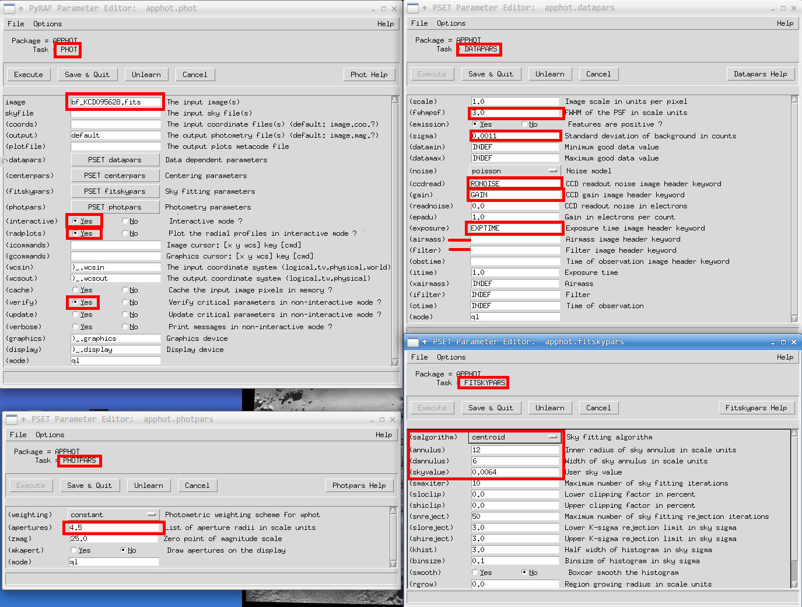
You can hit Save & Quit after setting all the values. They are explained below:
Parameters in PHOT will be used for the aperture photometry:
image: The input image nameinteractive,radplot: You will see what we can do if you chooseinteractivemode. It is recommended to check “yes” to both of these.verify: You can easily see what will be shown or hidden if you checkyes/no. Ifyes, it re-asks about the parameters.verbose: The word verbose means “display the results so that I can see what you are doing!” in computer world.
Parameters in DATAPARS will be used for the flux calculation:
fwhmpsf: The FWHM we obtained from above (3.0)sigma: The uncertainty in sky estimation (0.0011). This will not be used depending onsalgorithmofFITSKYPARS. See below.ccdread,gain,exptime: Put the header keywords, not the actual values.In our case, the image does not contain the header for readout noise, so you may encounter warning from PyRAF when you run the task, but it does not halt the process.
If you do not have the value in the header but still want to put, say,
ccdgain=5.0, then you can use the parameterreadnoise. Same goes true for gain, exposure time, etc.
Parameters in FITSKYPARS will be used for the sky estimation:
salgorithm: Quite many IRAF users are unaware of the sky estimation algorithm. You will learn it while using Python, but you can refer to the manual website linked above.annulus,dannulus: To estimate the sky value, IRAF can only use method called “annulus”. It means you are going to calculate the sky value and its uncertainty using the ring shaped region around the target (annulus with inner radius ofannulusand outer radius ofannulus + dannulus).Rule Of Thumb:
annulus = 4*FWHM,dannulus = 2*FWHMgenerally works well.More on sky estimation: IRAF does sigma clipping method to reject unrealistic sky values from the annulus defined by
annulusanddannulus, centered at the target. To tune this rejection, you can change other parameters such assloclip,khist,binsize, etc. You will learn what these do in the near future, and will make your own code to do the same thing.skyvalue: This will be used only whensalgorithm=const.
Parameters in PHOTPARS will be used for the photometric magnitude calculation with DATAPARS:
apertures: You have to sum the photon number within the aperture to get the stellar flux and thus magnitude. To do so, you have to set the aperture.Rule Of Thumb:
apertures = 1.5 * FWHMworks well.zmag: The zero-point magnitude. You can set it to any value in theory, but 25 is used in general in practice.
After saving these, you MUST display the image by yourself.
--> !ds9 bf_KCD095628.fits &
--> phot
The input image(s) ('bf_KCD095628.fits'):
Warning: Graphics overlay not available for display device.
Warning: Image bf_KCD095628.fits Keyword RONOISE not found.
Hit ? to see the help. Usually you will use f (of space bar if you want to save the result immediately). Some other things, such as c or t may be used.
TIP: You MUST open the image on
ds9which is the same as theinputsin thePHOT. It is a known bug and may not be fixed in the future.
If you hit f on a certain star, some kind of radial plot will appear with three vertical lines:
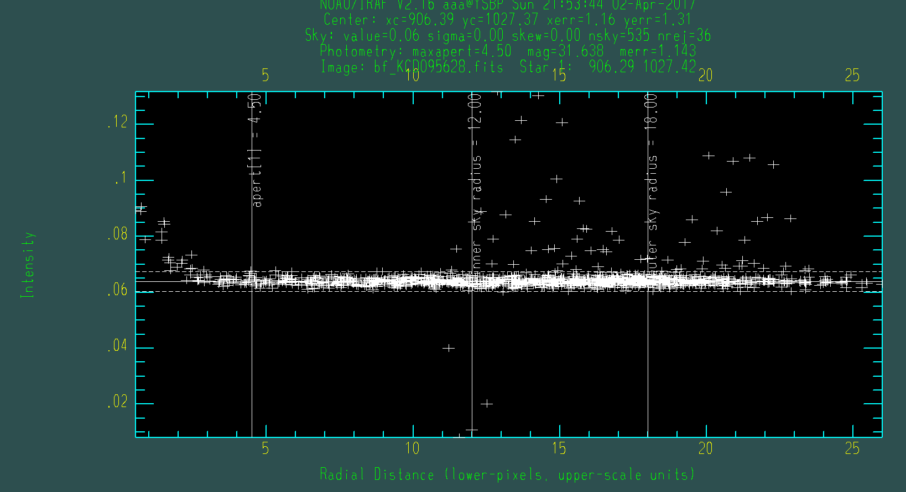
The image shows the plot of pixel values (Intensity) with respect to the radial distance from the calculated photocenter of the star near the cursor. In the lower axis, radial distance is shown in pixel units, and upper axis shows the scale units.
Question: Why do you think I used aperture
~1.5 FWHM?Question: Why do you think I used such annulus? Why can’t we use annulus from 4.50 to 12.00, for example in our case?
TIP: You may want to see the x-axis in arcsecond unit. Then, if you knew 1 pixel corresponds to 0.5 arcsec, for example, you could have set
scale = 0.5inDATAPARS.
The vertical lines show the aperture and inner/outer edge of the annulus to measure the sky. From the messages shown in the top of the image, you can read centroid result and the sky (depends on salgorithm you selected) statistics:
xc, yc: The result from marginalized centroidingxerr, yerr: The error ofxc, ycafter marginalized centroiding. I just guess these are calculated from Gaussian fitting to the marginalized fluxes (projection onto x and y axes)value: The representatice sky value, such as mode, median, mean, etc, depending onsalgorithm.sigma: The sky uncertainty (centered second moment)skew: The centered third moment (so called skewness)nsky: The number of sky pixels used to getvalue, sigma, skewafter sigma clippingnrej: The numver of sky pixels rejected after sigma clipping
Looking at the Results of PHOT#
Now you must have a file named filename+.mag.1, and mine is like this:
#N IMAGE XINIT YINIT ID COORDS LID \
#U imagename pixels pixels ## filename ## \
#F %-23s %-10.3f %-10.3f %-6d %-23s %-6d
#
#N XCENTER YCENTER XSHIFT YSHIFT XERR YERR CIER CERROR \
#U pixels pixels pixels pixels pixels pixels ## cerrors \
#F %-14.3f %-11.3f %-8.3f %-8.3f %-8.3f %-15.3f %-5d %-9s
#
#N MSKY STDEV SSKEW NSKY NSREJ SIER SERROR \
#U counts counts counts npix npix ## serrors \
#F %-18.7g %-15.7g %-15.7g %-7d %-9d %-5d %-9s
#
#N ITIME XAIRMASS IFILTER OTIME \
#U timeunit number name timeunit \
#F %-18.7g %-15.7g %-23s %-23s
#
#N RAPERT SUM AREA FLUX MAG MERR PIER PERROR \
#U scale counts pixels counts mag mag ## perrors \
#F %-12.2f %-14.7g %-11.7g %-14.7g %-7.3f %-6.3f %-5d %-9s
#
bf_KCD095628.fits 1067.000 998.000 1 nullfile 0 \
1070.161 998.227 3.161 0.227 0.114 0.116 107 BigShift \
0.06422786 0.001279112 7.303506E-4 2118 255 0 NoError \
120. INDEF INDEF INDEF \
4.50 58.87154 63.82666 54.77209 25.852 0.080 0 NoError
Because it is too long, I extracted only the last part. The commented lines explains the name of the parameters (N), unit (U), and the format (F). What you will use most frequently are XCENTER, YCENTER, RAPERT (aperture radius), MAG (instrumental magnitude), and MERR (uncertainty in instrumental magnitude).
I have obtained \( m_{\rm inst} = 25.852 \pm 0.080\)!
TIP: Although I have said that the small min/max of preprocessed image caused problem for
DAOEDIT, you can see that actually they are saved internally and has proper values in the.mag.1file.
Saving IRAF Files to Normal Text: TXDUMP#
Now, it is difficult to read by a human. So IRAF supports a task called TXDUMP, which dumps texts. For example, let me print XCENTER and YCENTER:
--> txdump bf_KCD095628.fits.mag.2 'xcenter, ycenter' yes
1070.161 998.227
You don’t have to use capital letters as you can see. yes is actually the answer to verbose option. You can open up the parameter setting by epar txdump. You can save the output as a file as you did in LINUX:
--> txdump bf_KCD095628.fits.mag.2 'xcenter, ycenter, mag, merr' yes > output.txt
and output.txt contains only the following numbers:
1070.161 998.227 25.852 0.080
TIP: You may worry that this kind of IRAF-specific format of output file cannot be read properly from Python. But
astropyhas built-in function calledascii, which properly reads these output files even faster, more readible, useful, and fancier thanTXDUMP.
9. For Your Future… DAOFIND#
Although I will not teach more on IRAF than this, you may need to learn using IRAF for photometry (even psf photometry) in the future, because many older generation prefers IRAF due to the legacy. I want to put one more information on PHOT task for your future reference and then the DAOFIND.
In PHOT, you may not want to do all the things interactively since you have 100 images with 2 stars of interest in each image (so that you need 100x2 = 200 interactions for the same xy coordinates). Then what you can do is to save the XY coordinate of the two stars in a file called stars.coo.1 and fill coords of “epar PHOT” with this filename. The file may look like:
1312.3 332.2
132.6 423.6
First and second columns are X, Y coordinate of the stars found from DAOEDIT or PHOT.
What this will do is similar to a mouse-keyboard macro program: load the image, put cursor at the given position, hit certain keys to measure and save magnitudes.
Now, what if you have 100 images but 100 stars in each image!? Doing DAOEDIT to 100 stars itself is exhausting. Then you can do DAOFIND or IRAF’s own starfinder algorithm, which is not used widely. FYI: Same algorithms are also implemented in Astropy-Photutils, too.
--> epar daofind
(settings is a simplified version of PHOT, so you can easily understand)
--> daofind
Task daofind is running...
FWHM of features in scale units (3.) (CR or value):
New FWHM of features: 3. scale units 3. pixels
Standard deviation of background in counts (0.0011) (CR or value):
New standard deviation of background: 0.0011 counts
Detection threshold in sigma (4.) (CR or value):
New detection threshold: 4. sigma 0.0044 counts
Minimum good data value (INDEF) (CR or value):
New minimum good data value: INDEF counts
Maximum good data value (INDEF) (CR or value):
New maximum good data value: INDEF counts
Warning: Image bf_KCD095628.fits Keyword RONOISE not found.
Here, detection threshold is the most important one. If the peak intensity of the fitted star (NOT the peak pixel value, but the peak value of the fitted function!) is below the |threshold * skysigma|, they are neglected and not considered as stars.
After a while, a file with filename.coo.1 will be generated with following contents:
#N XCENTER YCENTER MAG SHARPNESS SROUND GROUND ID \
#U pixels pixels # # # # # \
#F %-13.3f %-10.3f %-9.3f %-12.3f %-12.3f %-12.3f %-6d \
#
428.683 1.885 -0.704 0.507 -0.730 0.313 1
1336.253 2.638 -1.416 0.728 0.581 0.771 2
1399.732 1.493 -2.154 0.472 -0.726 0.345 3
......
About 20,000 stars are detected in my case.
Here, sharpness, sround, and ground are the parameters used to determine whether the source is a star-like one or not. They are defined in the Stetson 1987 paper for the first time. sharpness is a measure of “how sharp the target is”, and is kind of “peak value / sky value”, roughly speaking. sround and ground are roundness parameters: sround is to measure the roundness based on the symmetric property of the source, and ground is based on the marginalized Gaussian fit to the object.
10. Spectroscopic Preprocessing#
The preprocessing procedures are identical to photometry. One thing to be careful is just flat: flats should have identical filter, slit, grating, etc, with the object of interest.
We then may need one more step, i.e., trimming (cropping the image). Go display the flat.fits file by implot
--> implot flat.fits
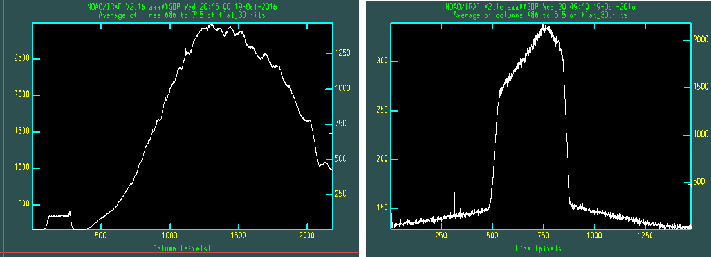
Left image: typing
:a 30and then:l 700(average over 30 pixels around line (row) 700)Right image: typing
:a 30and then:c 500(average over 30 pixels around column 500).
We may say that x (column): 500~2100 and y (line): 550~850 is reliable, and other pixels are useless. For smaller x values, there seems to be signal, but it is due to the higher order dispersion and/or due to the order sorting filter.
We can trim all the images (including the object) using the trimcor option in CCDPROC. The trim region can be specified at (trim) by [x1:x2,y1:y2], i.e., [500:2100,550:850], in our case. You can do it by
--> imcopy image[500:2100,550:850] image
to overwrite the original image by the trimmed image.
You can do preprocessing identical to the above sections. If you want to use
CCDPROC:Now we turn on
zerocor,darkcor, andflatcorwithbias.fits,dark.fits, andflat.fitsas follows:--> epar ccdproc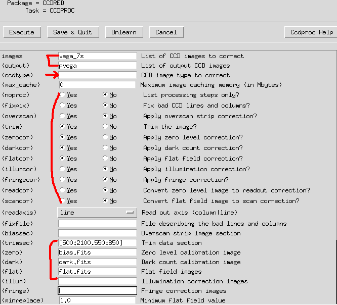
Click on Execute. You may see some results like this (exact values may differ):
--> imstat List of input images ('*.fits'): # IMAGE NPIX MEAN STDDEV MIN MAX dark.fits 481901 -0.7664 8.627 -33.5 2321. flat.fits 481901 1804. 823.4 73.57 24817. bias.fits 481901 113.3 5.251 90. 829. pvega.fits 481901 168.3 2541. -2224. 133972. vega_7s.fits 481901 220.9 1254. 83. 35427. --> ccdlist CCD images to listed ('*.fits'): dark.fits[1601,301][real][unknown][][TZ]:dark flat.fits[1601,301][real][unknown][][TZD]: bias.fits[1601,301][real][unknown][][T]: pvega.fits[1601,301][real][unknown][][TZDF]: vega_7s.fits[2184,1472][ushort][unknown][]:The
TZDFmeans it is trimmed, zero-corrected, dark-corrected, and flat-corrected, respectively.
11. APALL and IDENTIFY#
There are two cases for spectroscopic data:
The object is faint, so the sky lines are clearly visible (due to long exposure)
The object is bright, so the sky lines are not visible (due to short exposure)
For the first case, we can do the wavelength identification by sky line, and the second cases requires some reference (calibration) lamp images.
For convenience,
--> !mkdir after_prep
--> cd after_prep/
--> !mv ../pvega.fits .
The dispersion axis should be saved in the header for the IRAF to work properly. We can manually correct this information. First check whether the header containing the information:
--> imhead pvega.fits long+ | grep DISPAXIS
You can edit header:
--> hedit pvega.fits DISPAXIS 1 add+
add vega.fits,DISPAXIS = 1
update vega.fits ? (yes):
vega.fits updated
--> imhead pvega.fits long+ | grep DISPAXIS
DISPAXIS= 1
Now the image has the DISPAXIS header keyword.
Aperture Extraction#
We use APALL task:
--> noao
--> onedspec
--> twodspec
twodspec/:
apextract/ longslit/
--> apextract
apextract/:
apall apedit apflatten apnormalize apscatter
apdefault@ apfind apmask aprecenter apsum
apdemos/ apfit apnoise apresize aptrace
--> epar apall
Set parameters as in the figure. If you want the IRAF to automatically find aperture (you can modify it later by yourself, but you can get an idea how it finds the aperture), you can just set everything as default with turning the background subtraction on.
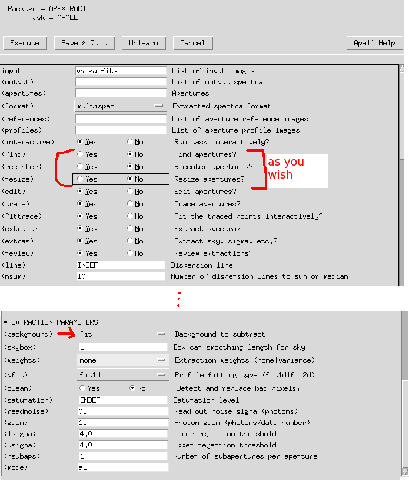
--> epar apextract
(Set dispaxis = 1)
--> apall
List of input images ('vega.fits'):
Edit apertures for vega? ('yes'):
If you hit ?, the command will show you the help page. Hit q, and you may be able to get out of the help page. The following images show four basic steps you have to do first:
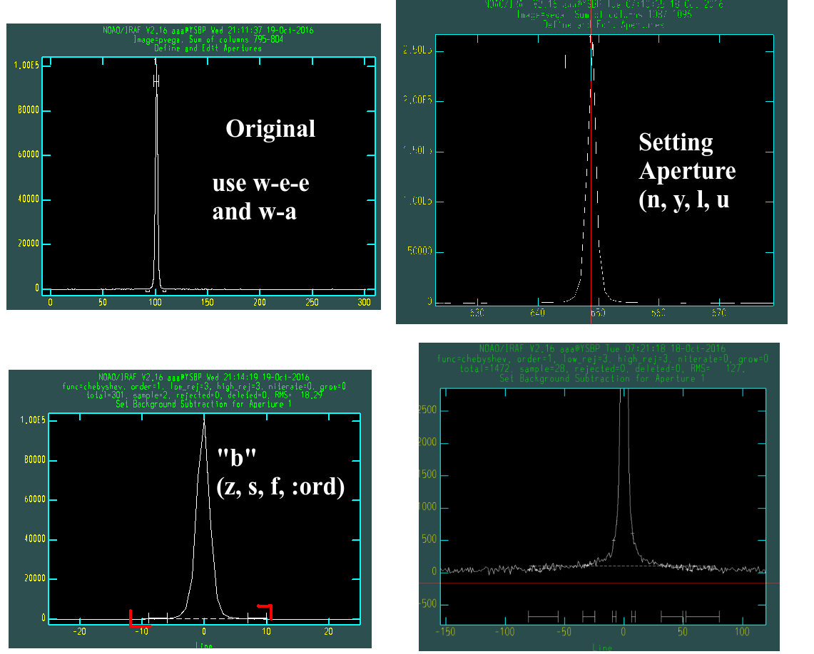
The screens of yours can be very different from this!
Top left: You will see the plot “original”. Hit
wfor zoom, andefor the lower left and upper right corner to zoom in. Hitwato get to the default zoom.QUESTION
efor lower left and then upper right. How would you then obtain the x-inverted zoomed image?
Top right: Hit
mornafter you put the cursor near the peak, and IRAF will automatically find aperture for the profile. Hitdto delete some misplaced ones. Hitykey so that you can define the aperture size as the width at the cursor. Hitlanduto set the aperture lower/upper limit manually.Bottom left: Hit
bto get into the background mode. We now will fit the background. This is needed to subtract background from the source. Hitwato go to the original zoom. Then doweeto zoom. It is better to zoom small y range to see the background fluctuation as indicated in the figure (red marks).Bottom right: The dashed line is the fitted sky (background). Sometimes the sky fit is very unrealistic, and you need to change the sky sampling region. Delete the original one by hitting
znear the ticks (I-beam shaped ones). Hitsat the lower/upper for both sides (usually more than total 4 hits). Hitfto fit the sky. Type:func cheb, and:ord 3, and thenfagain to see the 3rd order Chebyshev fit.Hit
qto get out from the background mode. Hit q again. On the terminal, you will see some questions. Type “yes” to the GRAPHICS, NOT THE TERMINAL!
You may have to answer for few times, depending on the APALL epar setting. Type return again and again until you see the following left figure:
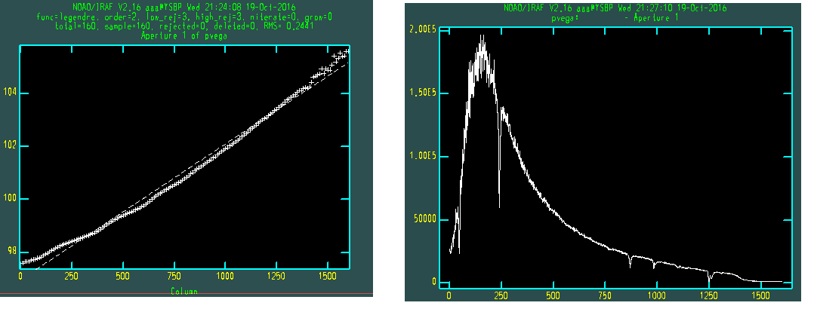
This is the aperture trace. The fitting does not look good, but if you see closely, the error is only few pixels order. But you may still want better fit.
Type :order n to fit the n-th order fitting line to the + signs. :order 2 to 5 will be enough for most of the cases. Hit f to see newly fitted dashed line. You can delete some points by d and redo it by u.
Moving along columns, the center of the aperture should move, due to the imperfection of instruments. This “shift” is called the trace. The above image shows this “trace” value along the columns(x-axis).
On the right, the extracted Vega spectrum is shown.
What is remaining? We have to change the x value to wavelength.
Wavelength Identification (Bright Object)#
You may have the trimmed reference (calibration) lamp image.
--> epar identify
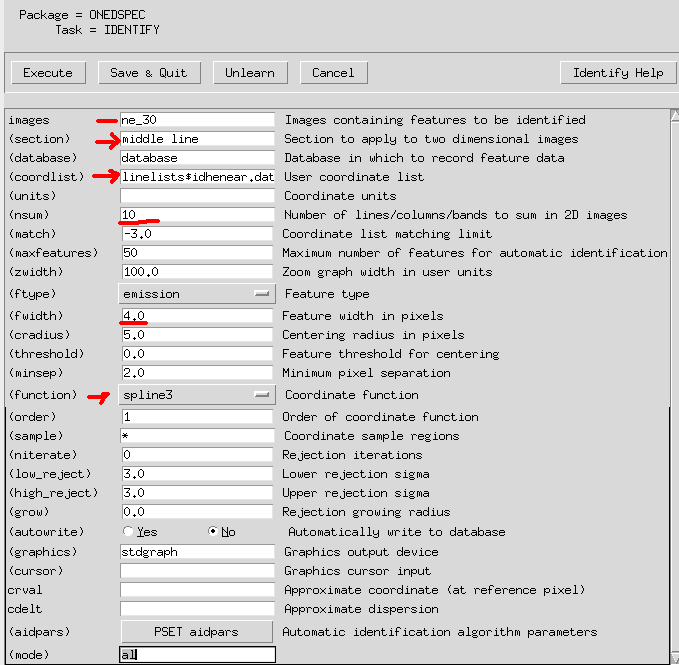
Set
coordlistto appropriate line profile text files. If you are not provided any files such asne.dat, leave it as default.sectionis usually set asmiddle columnormiddle line. It will show you the middle column/line cut (1-D plot).nsumis to sum certain number of pixels (lines or columns) to eliminate unwanted features (cosmic ray, etc). Just use ~ 10.fwidthis the initial guess of the full width of the lines. If it is very different from the real line width, the interactive line finding may not work properly.functionis to fit the pixel-wavelength relation. Usually it is safe to use Chebyshev polynomial.
The “desired” line spectrum of the lamp should be provided by the observatory. Since our observations does not, let me draw one figure from a public website:

(If the image is low resolution, you may find “low resolution lamp spectrum” more similar to your image, such as that in this link)
Now we have to let IRAF know what the wavelengths of about some peaks in the graphics. IRAF then automatically use the “peaks” data file to find all other peaks. Let’s see how it works:
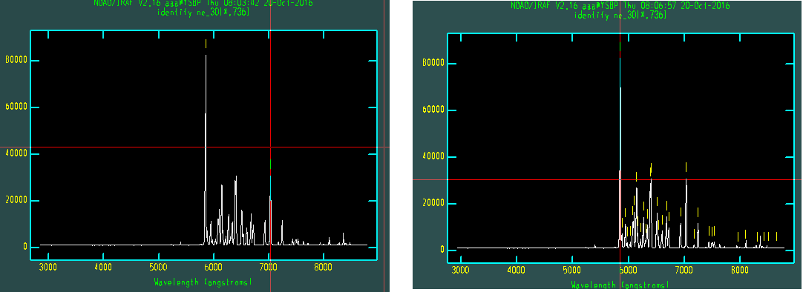
Left: Use
weeandwato zoom the spectrum. Put the cursor near one of the peaks (e.g., the largest peak at 5852.49 Angstrom). Then typem(for mark). At the bottom of the graphics, type the rough wavelength value (e.g., “5852”). Hit return. At the bottom, there will be the found wavelength value. It is found from the Ne.dat file, using your input value.Do the same thing few times more. We will let IRAF’s AID (Auto Identification) algorithm to find all other peaks based on the pre-defined database.
In some cases when you are not provided with line profiles (
.datfile) and it contains lines from un-cataloged data, you cann]ot use AID.Hit
lif you have provided line profiles. IRAF will automatically read appropriate .dat file (containing all possible line centers) and find all peak values.
Right: After hitting
l, you may see a lot of identified lines as in the figure. The lines, however, are not always the real ones, since very small emission peaks may be in the line data file, too. So this process is not always accurate, so you have to edit them.Delete some marks by
dwhere no peak is visible.If you feel satisfied, hit
fto see the residual plot. If there is any point with significant residual, hitdnear it to delete it (X mark will appear). Hitfagain and you will fit again. Hitqtwice to quit identify.
Some shortcuts are summarized below (from Documentation):
d (D)elete the feature nearest the cursor.
n Move the cursor or zoom window to the (n)ext feature (same as +).
p (P)an to the original window after (z)ooming on a feature.
z (Z)oom on the feature nearest the cursor. The width of the zoom window is determined by the parameter zwidth .
The ne_30.fits now include the information of our calibration. We now have to implement the object image file that the image fits file has reference spectrum data as this neon fits file! To do so:
--> hedit pvega.ms REFSPEC1 "ne_30.fits" add+
add pvega.ms,REFSPEC1 = ne_30.fits
update pvega.ms ? (yes):
pvega.ms updated
For check:
--> imhead pvega.ms long+ | grep REFSPEC1
REFSPEC1= 'ne_30.fits'
So the IRAF now will be able to change the x-pixels into wavelengths based on this Ne lamp fits data. This can be done by dispersion correction:
--> dispcor pvega.ms vega_final
Then plot:
--> splot vega_final
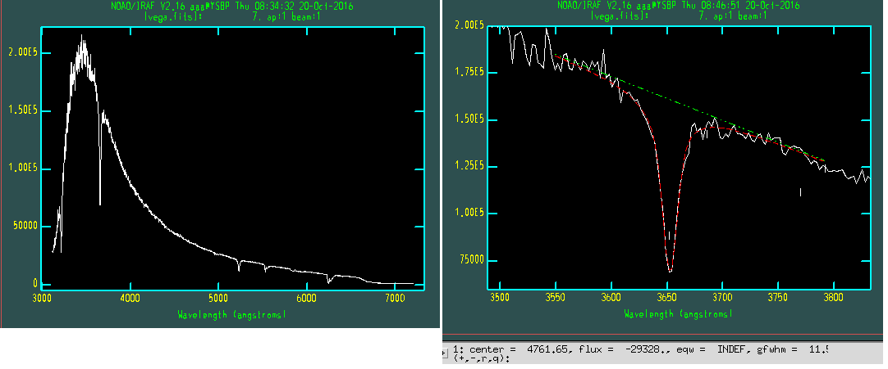
Left: Hit
space. You will seex,y,zvalues.yis the cursor’s y-value andzis the actual y value (flux) of the plot.Right: See below.
To study about a line (absorption, in our case), zoom into a certain region using w e e. We will fit the continuum, and fit the absorption line. At the left- and right-most positions you want to fit the continuum, hit d at each edges.
At the bottom of the graphics, you will be asked about “Lines”. This means with which profile you want to fit the absorption. I will select Gaussian. Put the cursor near the absorption line, and hit g. There will appear a small vertical tick which indicates the center you selected.
After you selected all the lines you want to calculate within the zoomed window, hit q. Another question is Fit positions: just type a. The next is Fit Gaussian width question, just type a. Fit background? Oh yes: type y. Then you will see a green continuum fitting line and red fitting line (absorption fitting line).
You can see the center, flux, equivalent width, and gaussian FWHM value at the bottom of the graphics. +/- will show you the results at next/previous peaks. r will show you the RMS of the background after fitting.
Hit q to exit. The same question will be asked for if you have other things to fit. Just hit q to quit completely. You will see “Deblending Done” message. The process we’ve done is called deblending, since we “deblended” line from the continuum.
12. Flux Calibration#
We need to have standard star spectrum to do the flux calibration. The standard star data is saved in somewhere like ${ANACONDA3}/envs/iraf/iraf/noao/lib/onedstds/. I haven’t yet made lecture note for this, but you can easily find simple example from FOCAS Cookbook. See section 5.7 of the cookbook.
A. IRAF Trouble Shooting#
Errors: Messages That You Cannot Change uparm something#
Check that you ran pyraf at the directory where you have login.cl”!
Many of the students ran pyraf where you didn’t do mkiraf. In such case, you can “run” pyraf, but nothing will work correctly. Even ls will not work. If you had to put ! in front of ls, that means you made some mistake.
Errors: “FXF” or “Not an Image or a Number”#
The following error messages may be popped up if the image reduction had some problem:
FXF: must specify which FITS extenstion
(filename) is not an image or a number
For check, do imstat *.fits and see whether the results are printed normally.
Possible reason for wrong image processing:
I found many students wrongly did
ls *.fits > ~~~~.list. Please open the~~~~.listfile and check whether it contains only the desired fits files. These should not containbias.fitsorflat.fits, etc.In other cases, students didn’t remove the pre-existing bias or flat files. You must remove the pre existing files via
!rm bias.fits, etc, before median combining. If not, IRAF automatically adds one more extension on top of the original file, which then doubles, triples, … the size of the image.